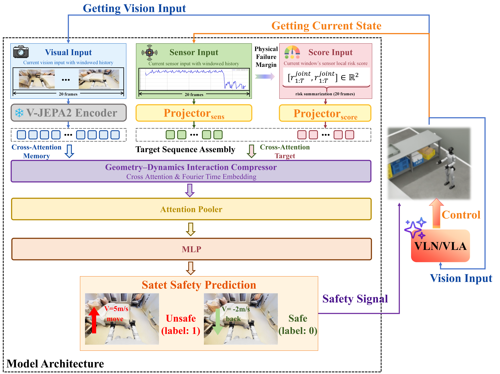

SafeWBM: Multimodal Plug-in Early-Warning Safety Monitoring for Indoor Humanoid Whole-Body Motion
Highlights
- Core Contribution 1: RoboSafety Dataset. Constructed the first large-scale multimodal safety benchmark for humanoid whole-body navigation, featuring 98 diverse indoor environments with synchronized visual-proprioceptive data and fine-grained annotations of collision and fall risks.
- Core Contribution 2: Geometry-Dynamics Interaction Mechanism. Proposed SafeWBM, a model-agnostic safety monitor that employs a cross-modal attention mechanism to ground visual geometric constraints into proprioceptive dynamic states, effectively bridging the gap between semantic understanding and physical stability.
- Core Contribution 3: Plug-and-Play Safe Navigation. Demonstrated a lightweight, modular safety layer that integrates seamlessly with existing Vision-Language Navigation (VLN) policies, enabling proactive risk mitigation and smooth collision avoidance without requiring policy retraining.
- Performance Improvement: Compared to state-of-the-art unimodal baselines, SafeWBM achieves a +15% improvement in F1-score for dynamic risk detection and extends the average pre-event warning time up to 1.70 seconds, significantly enhancing safety margins in unseen environments.
Demo Video
Demo: This video demonstrates the real-time performance of SafeWBM. By fusing egocentric vision with proprioceptive data, our model successfully predicts potential collision and fall risks 1.70 seconds in advance, allowing the humanoid robot to smoothly decelerate and adjust its path, whereas baselines often fail or trigger abrupt emergency stops.
Abstract
Deploying humanoid robots in cluttered indoor environments requires rigorous whole-body safety assurance. Existing Vision-and-Language Navigation (VLN) policies often lack explicit risk awareness, while general Vision-Language Models (VLMs) fail to capture high-frequency dynamic hazards. Conversely, reactive controllers like Control Barrier Functions (CBFs) suffer from myopia, causing disruptive emergency stops. To bridge this gap, we introduce RoboSafety, a dataset with 14k multimodal trajectories annotated for collision and fall risks. We propose SafeWBM, a lightweight plug-in safety monitor that fuses visual geometry with proprioceptive dynamics. Unlike naive fusion, our geometry-dynamics attention mechanism selectively grounds visual semantics into physical constraints. Experiments show that SafeWBM outperforms general VLMs (mF1 $\approx$ 0.5) and single-modality baselines. Specifically, it improves detection in seen scenes by +0.15 F1 over vision-only methods by capturing dynamic instability, while maintaining robustness in unseen scenes where proprioception-only methods fail. System-level integration extends the warning time up to 1.70 seconds, enabling smooth recovery behaviors.
Method Overview

Architecture of the proposed SafeWBM： The visual branch processes a window of egocentric images with a frozen V-JEPA2 encoder. The proprioceptive branch encodes joint and IMU measurements, together with lightweight risk scores, through sensor-specific projectors. A geometry--dynamics interaction compressor performs cross-attention between proprioceptive queries and visual memories and aggregates temporal information. An attention-based pooling layer and a feed-forward prediction head output a safety score that is fed back as a read-only safety signal to the navigation and control stack.
RoboSafety Dataset
We introduce RoboSafety, a large-scale multimodal dataset containing 14k trajectories with rich safety labels, collected across diverse indoor environments.

Dataset Overview: (a) The humanoid robot platform and onboard sensors, including camera, IMU, and joint encoders, provide synchronized visual and proprioceptive data streams. (b) Multimodal sequences record synchronized visual observations and proprioceptive dynamics signals from onboard sensors, with collisions and external perturbations annotated along the trajectory. (c) Indoor navigation scenarios and definitions of motion risks in the RoboSafety dataset. (d) Example safe, collision, and fall trajectories that provide supervision for safety prediction.
Qualitative Comparison
To demonstrate the generalizability of our method, we integrated SafeWBM as a plug-in module with three state-of-the-art VLN policies: NaVILA, NaVid, and Uni-NaVid. The following videos show that in diverse unseen indoor scenarios, SafeWBM consistently provides accurate early warnings and enhances safety execution without requiring any fine-tuning of the host policies.